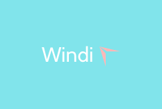
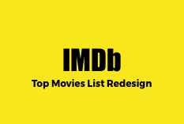

My Working Projects
View my most recent projects

Windi is a website / app which allows travelers to connect to people worldwide. Windi allows easier travel planning for groups and individuals who are looking to be a part of a travel group.

Seasonal is a Los Angeles Recyclathon Hackathon project created by multiple members as a team. This website solves the problem of LA opensource data making it available to the public.

Work for LA is a website that solves the problem of many people leaving the workforce in Los Angeles by 2020. Work for LA is an organized solution that helps people find LA civic jobs.
iQsonics is a software product which helps autistic children with speech development. The purpose of the website is to make parents navigate easy to find and sign-up for the program.

The current IMBd top movies list is not as organized and user friendly as it could be. The design displayed here is to make the top movies list page more intuitive and easy for users.

A pdf of the UX / Service Design techniques listed from the book "This is Service Design Thinking." I have redesigned the content to have them as a pdf available to me at all times."